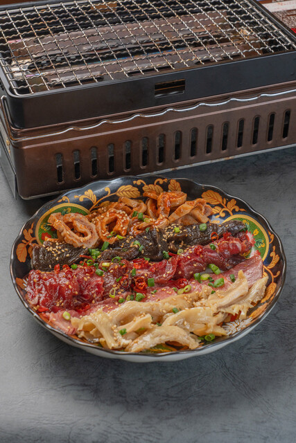
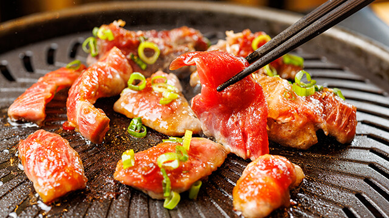

INFORMATION
鮪のしまはら 水道橋店
- Address
- 東京都千代田区神田三崎町2-15-12 日幸ビル 1F
Google Map - Access
- JR水道橋駅から徒歩3分
- Hours
- ランチ 11:30〜14:30（L.O. 14:00）
ディナー 17:00〜23:00（L.O. 料理22:00・ドリンク22:30）
月〜日・祝日とも - Contact
- 050-5456-2387
- Reserve
- Reservations 食べログで予約